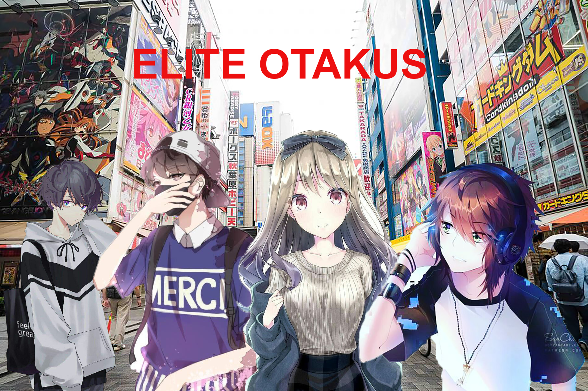

These are the Elite Otakus, a group of anime fans who are considered to be most powerful and influencial in the otaku community. When they were younger, their lives were dull and dreary. They didn't have any type of media to really be interested in because a lot of the entertainment around them just wasn't good enough for thier taste. Everything was lackluster and didn't have enough thrill. But that all changed when each of the four members watched their first anime. They were very amazed to finally find a form of media that had everything they ever wanted and appealed to their personalities. Over the years, their interest in anime grew massively and they became very well-known among people in Japan and the U.S.
Credits: Smith, John. “Image Stand In” Flickr. Yahoo! Web. 7 Apr. 2011